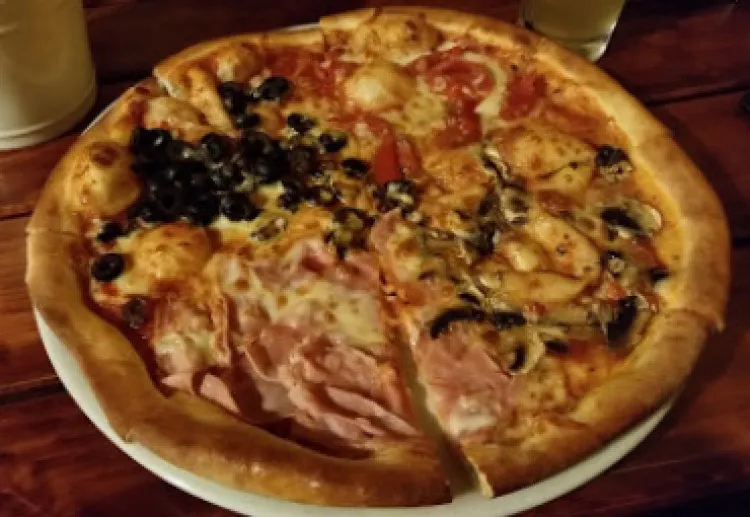

Pizzeria · Povstalecká cesta 49, Podlavice
Pizza a pivo v Podlaviciach.
Otvorené od stredy do soboty, vždy 16:00 – 22:00.
Otvorené St – So do 22:00

Hodnotenie
4,5 z 5 na Google.
Priemer z 358 recenzií na Google. Na damepizzu.sk má Pizza Domček 4,3 z 5 z 32 hodnotení.
Kontakt
Povstalecká
cesta 49
974 09 Banská Bystrica – Podlavice
- Telefón
- 0910 462 676
- Objednávky
- telefonicky, pizzu si vyzdvihnete osobne
Otvorené St – So
| Pondelok | zatvorené |
| Utorok | zatvorené |
| Streda | 16:00 – 22:00 |
| Štvrtok | 16:00 – 22:00 |
| Piatok | 16:00 – 22:00 |
| Sobota | 16:00 – 22:00 |
| Nedeľa | zatvorené |